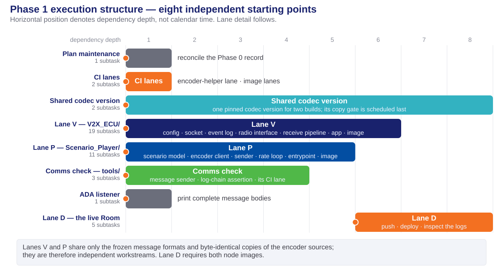
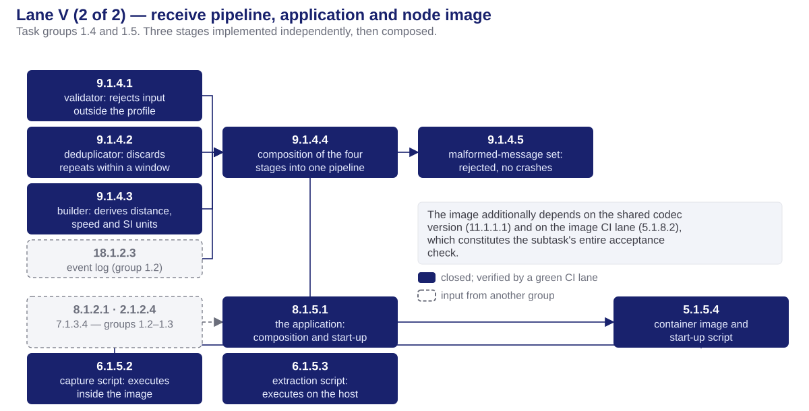
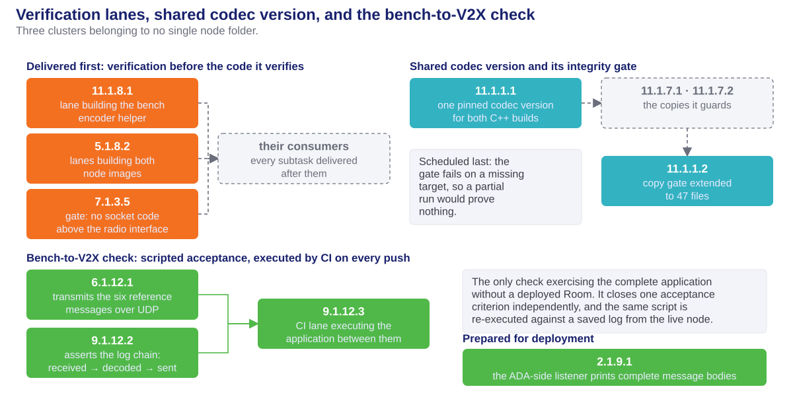
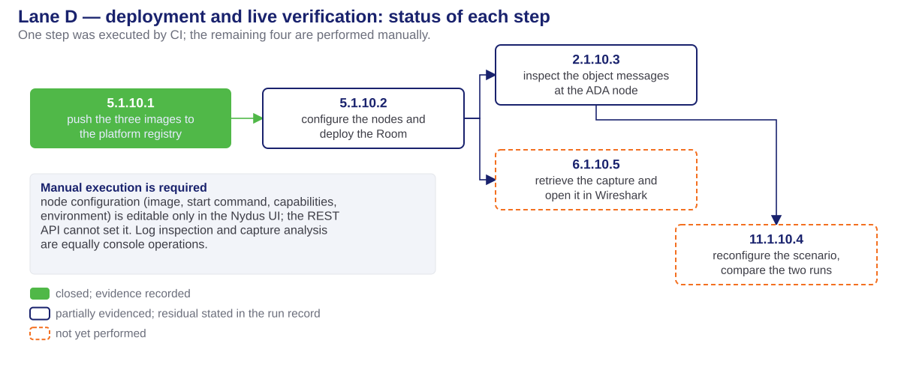

Phase 1 — Task Execution
Preceding phase: phase0-task-execution-deck.html · phase0-design-concepts-deck.html
Sources: phase1_tasks.md · phase1-comms-run.md · design documents for the V2X ECU and the bench
Table of contents
Work organization
track, execution lane and CI lane
Work decomposition
identification scheme, phase size, execution responsibility
Task groups
the deliverable of each of the twelve
Code delivered
the files added to the repository
Execution order
dependency structure, lane by lane
Parallel and sequential work
and the constraint behind each
Verification status
the nine acceptance criteria and the scope of their evidence
Handoff
inputs available to Phase 2, and the outstanding work
Work organization
Phase objective and scope
- Objective. The bench transmits synthetic traffic messages; the V2X ECU receives, decodes and forwards each one to the ADA ECU as an object message.
- Reception only. The vehicle transmits nothing in this phase.
- Entry condition. Phase 1 could begin only because Phase 0 had frozen the message formats.
- Exit condition. Nine acceptance criteria, each closed by a stated piece of evidence.
- Two node folders were developed concurrently: the V2X ECU in C++ and the bench, named the Scenario Player, in Python. They share no source code — only the frozen message formats and byte-identical copies of the encoder sources.
Planning terminology
Three distinct concepts are referred to as a track or a lane. They are not interchangeable.
| Term | Definition | Specified in | Phase 1 example |
|---|---|---|---|
| Track | a workstream spanning whole phases, executed by different people concurrently | milestone1_high_level_plan.md | the comms track = Phase 1 |
| Phase | one stage, with an input list and acceptance criteria | task-planning-conventions.md | Phase 1 |
| Execution lane | subtasks ordered by dependency, named after the folder they write into | the phase plan, Execution order & parallelism | Lane V = V2X_ECU/ |
| CI lane | one job in the GitHub Actions workflow; it builds, tests, and passes or fails | phase1-ci.yml | v2x-comms-check |
- Lane letters are local to a phase and do collide. Phase 0 Lane D is the bench folder; Phase 1 Lane D is the deployment chain.
- Lane letters do not express an order. Only a stated dependency sequences one lane against another, and a dependency always names an artifact.
- Only a CI lane executes. A track and an execution lane are planning structures.
Execution lanes
Each lane is named after the folder it writes into; no two lanes modify the same files.
| Lane | Writes into | Depends on | Deliverable |
|---|---|---|---|
| V | V2X_ECU/ | the Phase 0 message formats | receive pipeline, application, capture scripts, container image |
| P | Scenario_Player/ | the message formats and encoder sources | bench application, encoder helper, container image |
| Shared | contracts/ | nothing initially; everything at close | one pinned codec version for two builds; the copy-integrity gate |
| CI | .github/workflows/ | nothing | four verification jobs, delivered before the code they verify |
| Comms check | tools/comms_check/ | the event-log format | scripted proof that a transmitted message is received and forwarded |
| D | the deployed Room | lanes V and P | image push, deployment, log inspection, scenario swap, traffic capture |
- Lanes V and P are logically parallel. They were executed consecutively only because all subtasks share one working folder on one machine.
Continuous integration as the verification path
- The development machine runs Windows without Docker or a Linux subsystem. Every C++ compilation, container image and Linux test therefore executes on GitHub Actions.
- Ten jobs across two workflow files. Phase 0 established six in
phase0-ci.yml; Phase 1 addedsp-codec-helper,v2x-comms-check,v2x-ecu-imageandscenario-player-imageinphase1-ci.yml. Both run on every push, so the split is a matter of maintenance, not of coverage. - For a C++ subtask, "tests pass" is defined as "the lane is green". No alternative execution environment exists, so the definition of done cites a run identifier.
- Three runs verify the phase: 8 lanes green over the phase's code · 10 lanes green adding both node images, which also pushed them to the platform registry · 10 lanes green confirming the malformed-message tests.
- The image lanes carried the highest schedule risk. The message library is compiled for the platform's ARM processor under emulation; both images built within the six-hour ceiling at the first attempt, in approximately 19 and 20 minutes.
Work decomposition
Task identification scheme
Every task and subtask carries the identifier X.Y.Z.W.
| Segment | Meaning | Value in 9.1.4.4 |
|---|---|---|
X | the requirement served | safe decoding of incoming messages |
Y | the phase | 1 — comms bring-up |
Z | the task group | group 1.4 — the receive pipeline |
W | the subtask | the fourth: composition of the four stages |
- The group number is not the requirement number. Group 1.5 contains
8.1.5.1,6.1.5.2,6.1.5.3and5.1.5.4— four requirements in one group, because together they deliver a single outcome: a V2X ECU that runs, captures its own traffic and ships as an image.
Decomposition summary
- 12 task groups, 44 subtasks, six lanes. Lane V 19 · lane P 11 · deployment 5 · comms check 3 · shared codec version 2 · CI 2 · ADA listener 1 · plan maintenance 1.
- One subtask has one objective, one atomic commit, a passing build and passing unit tests. A subtask without a recorded status line has not started.
- Every subtask brief is self-contained — file paths, message fields, acceptance criterion — so the implementing agent need not read the wider codebase.
- No tunable value is hardcoded. Ports, peer addresses, retry counts, the duplicate-message window, the capture filter and the scenario itself are configuration injected by the platform.
- 39 of the 44 subtasks required no platform access. This was deliberate: deployment was the scarce resource, so all work that could be verified off-platform was scheduled first.
Execution responsibility
| Performer | Count | Scope |
|---|---|---|
| AI implementation agents | 39 | All application code, tests and CI jobs; one atomic commit per subtask |
| Cloud platform (CarSky) | 1 | Planned for the platform agent: push of the three images to the registry |
| Manual, in the platform UI | 4 | Node configuration, deployment, log inspection, scenario swap, capture analysis |
- The platform step was executed by CI. The registry credential was already present as a repository secret, so the image lanes performed the push themselves; the platform agent was not required and was never available.
- Manual execution is unavoidable for the remaining four. Node configuration — image, start command, capabilities, environment — is editable only in the platform UI; the REST API cannot set it. Log inspection and capture analysis are equally console operations.
- All 44 subtasks are tracked identically. Only the performer differs; the evidence requirement does not.
Task groups
Task groups 1.1 – 1.6
| Task group | Deliverable and lane |
|---|---|
| 1.1 — shared codec version, copy gate | One pinned codec version consumed by both C++ builds, and the integrity gate extended from 36 to 47 tracked copies. Shared lane; its gate is scheduled last in the phase. |
| 1.2 — V2X ECU foundation | The sole environment reader, the sole socket owner, the event log, and the sender to the ADA node. Lane V. No component above these is aware of the transport. |
| 1.3 — radio interface, simulated modem | The four-call radio interface a production modem would implement, and a simulated modem that acknowledges each call, injects faults on request and recovers from them. Lane V. |
| 1.4 — receive pipeline | Decode, reject messages outside the agreed profile, discard duplicates, convert to SI units, forward. Four stages tested independently, then composed. Lane V. |
| 1.5 — application, capture, image | The application itself, traffic capture inside the container, host-side extraction, and the deployable image. Lane V. |
| 1.6 — bench application | Configuration loading, the two scenario files, the motion model, the encoder client, the transmitter, the rate loop and the entrypoint. Lane P. |
Task groups 1.7 – 1.12
| Task group | Deliverable and lane |
|---|---|
| 1.7 — bench encoding path | A C++ helper process invoked by the Python bench, built from byte-identical copies of the V2X ECU encoder sources and verified against the six reference messages, plus the bench image. Lane P. |
| 1.8 — two CI jobs | The helper build lane and the two node-image lanes. Delivered before their consumers, each guarded to skip until the code it verifies exists. |
| 1.9 — ADA-side listener | The listener on the ADA node prints complete message bodies rather than the first 96 characters, so the deployment can display the payload. |
| 1.10 — deployment and verification | Push, configure, deploy, then collect evidence from the running nodes. Lane D — one step on CI, four performed manually. |
| 1.11 — plan maintenance | Reconciliation of the Phase 0 acceptance record with the state Phase 0 actually reached. Documentation only. |
| 1.12 — bench-to-V2X check | A transmitter, a log-chain assertion script, and the CI job that runs the application between them. The only check that exercises the complete application without a deployed Room. |
Code delivered
Deliverables — V2X ECU
| File group | Delivered by | Function |
|---|---|---|
src/config/ · src/net/ · src/log/ · src/forward/ | 8.1.2.1 7.1.2.2 18.1.2.3 2.1.2.4 | Foundation: the sole environment reader, the sole socket owner, the JSON event stream, the sender to the ADA node |
src/adapter/ · src/stub/ | 7.1.3.1 – 7.1.3.4 | The frozen four-call radio interface and the simulated modem behind it, with fault injection and defined recoveries |
src/pipeline/ — validator, deduplicator, builder, composition | 9.1.4.1 – 9.1.4.4 | Decode, validate against the profile, discard duplicates, convert to metres and m/s, forward. Each stage tested independently |
src/main.cpp · CMakeLists.txt | 8.1.5.1 | The application: composition and start-up sequence only, with no logic of its own |
tests/ — 11 suites · tests/fixtures/malformed/ — 10 cases | all groups, 9.1.4.5 | Including the malformed-message set: six that must be rejected, four that must be tolerated |
capture.sh · tools/extract_pcap.sh · Dockerfile · entrypoint.sh | 6.1.5.2 6.1.5.3 5.1.5.4 | In-container capture, host-side extraction, and the deployable image |
tools/check_transport_imports.py · doc/telux-parity-and-port-plan.md | 7.1.3.5 7.1.3.6 | The gate confining socket code below the radio interface, and the changes required by a production modem |
Deliverables — bench, shared configuration, test equipment
| File group | Delivered by | Function |
|---|---|---|
player/config.py · scenarios/default.yaml · scenarios/c-out-of-range.yaml | 11.1.6.1 11.1.6.2 | Configuration loading, and two traffic situations expressed as data: C approaching, and C stationary out of range |
player/scenario.py · player/generator.py | 11.1.6.3 11.1.6.7 | The position of C at a given instant, and the loop that emits one message every 100 ms |
player/encoder_client.py · player/sender.py · main.py | 11.1.6.5 11.1.6.6 11.1.6.8 | Communication with the encoder helper, transmission, and the entrypoint the platform starts |
codec_helper/ — cpm_encode · Dockerfile | 11.1.7.1 5.1.7.3 | A C++ encoder built from byte-identical copies of the V2X ECU sources, and the bench image carrying it |
tests/ — 10 suites, 116 local tests, and the encoder verification | 11.1.6.4 11.1.7.2 | Including proof that the two scenario files produce different message streams, and that the helper output matches the reference messages exactly |
contracts/vanetza-pin.cmake · contracts/sync-manifest.json | 11.1.1.1 11.1.1.2 | One pinned library version for both builds; the gate now covers 47 byte-identical copies |
tools/comms_check/ · tools/netcheck/netcheck.py | 6.1.12.1 9.1.12.2 2.1.9.1 | Test equipment: the transmitter, the log-chain assertion, and the listener printing complete bodies |
Execution order
Execution overview

- Horizontal position denotes dependency depth — the distance of a unit of work from the start of the phase — not calendar time.
Lane V (1 of 2) — foundation and radio interface

Lane V (2 of 2) — receive pipeline, application, image

Lane P — bench application

Verification lanes, shared codec version, comms check

Lane D — deployment and live verification

- The Room was deployed and object messages were received. The outstanding items are narrower than the deployment itself: per-node status, a scripted check over a saved log, the second scenario, and a capture file.
Parallel and sequential work
Dependency structure
| Relationship | Scope | Constraint |
|---|---|---|
| Parallel — the two node lanes | all of V2X_ECU/ against all of Scenario_Player/ | Disjoint folders. The lanes meet only at the frozen message formats and the byte-identical encoder copies |
| Parallel — within the foundation | configuration reader, socket, event log | Distinct files and no shared type; only the forwarder requires the socket |
| Parallel — within the pipeline | validator, deduplicator, builder | No stage invokes another; only the composition requires all three |
| Sequential — the radio chain | interface, simulated modem, faults, receive thread | Each step is the compile-time input of the next |
| Sequential — CI before code | three verification jobs before the subtasks they verify | A subtask whose acceptance criterion is a green lane requires that lane to exist on the day it lands |
| Sequential — final step | the copy-integrity gate, after every new copy exists | The gate fails on a missing target; an earlier run would prove nothing |
| Sequential — deployment chain | push, configure and deploy, inspect logs, swap scenario | An image cannot be deployed before it is pushed, nor logs read from a node that is not running |
Verification status
Acceptance criteria
| Criterion | Status | Evidence |
|---|---|---|
| No socket code above the radio interface | closed | The gate executes on every push; the porting notes are committed |
| Start-up calls acknowledged; every fault recovers | closed | Unit tests and the end-to-end CI job; not a deployed node |
| Reference messages decode; malformed messages rejected | closed | Through the production decoder: 6 rejected, 4 correctly tolerated, no crashes |
| A bench message is received, decoded and forwarded | closed | The v2x-comms-check job, which fails if any link is removed |
| Both images build for the platform; the Room deploys | partial | Built, pushed, pulled and executed; per-node status not yet confirmed |
| Traffic captured on the bridge network | partial | Capture is active and shows both directions; no file has been retrieved |
| Different scenarios produce different message streams | partial | Proven in the model and at byte level; the live swap is outstanding |
| Object messages at the ADA ECU are not constant values | partial | Observed live and verified; the scripted check over a saved log is outstanding |
| Demonstration: the capture opened in Wireshark | open | Requires a log from a Room that has run a full rotation period |
Scope of the evidence
- Verified by machine on every push: the import gate, the fault recoveries, the malformed-message tests, and the complete received–decoded–forwarded chain. These are re-proven at every commit.
- Observed once, on a live Room: object messages at the ADA node with
distancedecreasing by exactly 0.25 m per message at 10 messages per second, matching the 2.5 m/s closing speed in the scenario file. The derived distance equalshypot(50.25, 1.2)to every printed digit, confirming computation from the decoded position rather than transfer of a transmitted value. - Measured incidentally: the complete decode-to-forward path required 142–151 µs, consistently, across every sampled message pair.
- Not yet evidenced: every item requiring a saved log export — the scripted log check, the second scenario, and the capture file.
Handoff
Inputs available to Phase 2
Phase 2 implements the ADA ECU track store and admission logic on mock input. The following are Phase 1 deliverables and need not be re-proven.
- Object messages arrive at the ADA node. Their structure, units and field values were verified against the running bench, so Phase 2 builds against an observed format rather than an agreed one.
- The platform is characterised. Images build for its processor, push to its registry and execute; the node-configuration deviations — the start command is space-separated, not a JSON array — are recorded in the run record.
- The event stream exists. Every stage of the receive path emits one JSON line with running counters; later phases reconstruct a complete run from this format.
- Ten CI jobs verify the tree on every push, four of them added by this phase, and the copy-integrity gate covers 47 files.
- Test equipment is node-independent and therefore reusable: the transmitter, the log-chain assertion, and the listener printing complete bodies.
Outstanding work
40 of the 44 subtasks are closed. No agent work, CI work or new code remains; all four outstanding items are performed manually in the platform UI.
| Subtask | Required action |
|---|---|
5.1.10.2 | Confirm per-node Running status and a restart count of zero in the Deployment Viewer, rather than the summary header, which reported "Pending — 0/0 nodes ready" during normal traffic |
2.1.10.3 | Record the start-up call sequence, which is emitted once at node start, and execute the log-chain check over a saved log export |
11.1.10.4 | Reconfigure the bench to the second scenario file, redeploy, and compare the two log sets |
6.1.10.5 | Save a log containing a capture block, run the extraction script, and open the result in Wireshark |
- One deployment session closes all four. The final three read the same node log; one restart and one sufficiently long log download serve all of them, provided the Room has completed a full capture rotation period.
- Two decisions remain with the owner, neither of them a task: ratification of the retry and duplicate-window defaults, and whether the display-application clause belongs to this phase, which no design document covers.
Thank you
Phase 1 — Task Execution · Milestone 1 · FPT Hackathon 2026